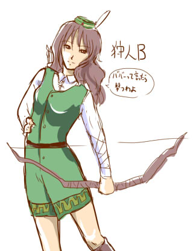

■2012-10-26 (金) 前回に引き続き▼
片道勇者より 狩人Ｂ（女）

片道勇者の「狩人」は、遠距離職というシブめな性能に合わせて、
ちょい人気路線から外した感じの顔グラフィックにしています。
剣士や騎士は、割と格好いい系 or かわいい系にしているつもりです。
でも狩人のＣはあざとい系。
【10年（以上）前のネタ帳回収の旅】
今も過去のネタ帳回収は引き続き行っています。
A4ノート100ページびっしり書かれた呼称「ラスボス本」やら
他にも何冊も残ってる状況ですが、だいぶ落ち着いてきました。
あまり面白くない話かもしれませんが、
また今回気付いたことを挙げていきます。
シル見を開発する前の、１２年前くらいのネタ帳が見つかったので
それらを何冊か見てて思ったんですが、量は多いものの
「似たようなネタ何度メモ帳に書いてんの」という印象が強くてガーン！
当時は多くのネタがあっても一本の作品として完成させてなかったので、
「作品として吐き出してないネタ」が、知らない間にループしてた印象です。
実は結構恐いんですよコレ。すでにもう思いついててどこかに書いたのに、
すっかり忘れて何度も焼き直ししているケースがよくあるんです。
これ、書いてる最中は何かが進んでる気分になるんですが、
実際は何も進んでいない負のループに陥ってる感じがします、ヤバいです。
当然のことながら、やっぱり完成させて公開していかないといかんなあ、
と思ったひとときでした。特にキャラ設定や世界設定周りはループ率ヤバい！
あとついでに思い出した話として、
「使い所が来ても面白いネタはなるべく温存して、使いすぎない方がいい」
という発想が一時期あったんですが、それも危ない！
いわば「ネタを温存する」行為なんですが、これは実は
「ずっと手元に切り札が残ってるように見えて安心できる」というだけで、
実際は（滅多に来ない）有効な使い所なのに切り札を出さないままなので
完成品自体も面白くならないし、自分の正直な気持ちとしても
納得がいかないので、いつまでたっても進められなくなるという。
これも完成させられない昔の自分の悪いくせでしたね。
今はどちらかというと逆になって、
「今作ってるゲームに非常にハマるんじゃないか？」と
思うチャンスが来たら、「今作ってるのとまったく別の作品用のネタ」
でも気軽に持ってくることが多くなりました。
たとえ、抜いた方の「まったく別の作品」の方が、
一本作れなくなるほど歯抜けになってしまっても、です。
昔より価値あるネタのストックが増えたからそんな余裕ができたのか、
それとも、より合理的になったのか、それは分かりませんけれど、
創作する身としては、今を全力で生きる方が格好いいと思えます。
いつか枯れる日が来るまで、常に全弾放出していきたい。
そしてまた話が飛び飛びになってしまいますが、ネタに関連して一つ。
「これは面白い！」「なるほど！」と思ったことは、
他人の言葉であれ何であれ、やっぱ何でも
メモしておくといいんだなと思い直しました。
現代はパソコンでテキストを見る機会も増えているはずなので、
そのままコピペで保存できてしまう場合も多いですしね。
たとえ他人の言葉であれ、意識をよりよい方向に変えたり
色んな事に気付かせてくれる力は、10年後でもずっと残り続けます。
その際は出典や発言者もきっちり一緒に書いておくと、
うっかり間違えてモロパクリしたりせずにすみますし、
いざというときは出典や引用元を並記して紹介できるので安心ですよ。
【続・シル学ユーザデータ】
また、シル学のユーザデータ大賞用スクリプトもちょいちょいいじってます。
元のユーザデータ集から投票用の一覧データに置き換えるのが
かなーり大変そうなので、なんとか自動化して済ませたいと考えてます。
そもそもユーザデータ集用のCGIがやや難解で理解しきれてなくて、
フォーマットがよく把握できていないのも辛いところです。
で、そのデータ変換にめどが付いたら、次は投票方法の検討です。
部門別にするか考えてたんですが、微妙に部門があいまいなユザデが
いくつかあって処理に困ることが分かったので、
とりあえず投票自体はまとめて行うと思います（結果は手動で分けるかも）
そしてもう一つ、採点方法に関してどうしたもんか考えているところです。
基本的には「導入する人がユーザデータを選ぶための目安」となるような、
そういう採点ないし傾向付けができればいいなと考えています。
たとえば、バトル重視かストーリー重視かバランスかどっちもないか、
ゲーム性向上度合い、とりあえず入れておけ度、
バグや他ユーザデータとの干渉などを含めた完成度はどんな印象か、
原作との親和性が強いか弱いか、などなど。
そしてそれらとは別に「あなたが付ける総合得点」を
決められるようにする、というあたりがほどほどに妥当かもしれません。
技術的に実現しやすく、かつそこそこマシなラインを狙って、
もうちょい検討を続けていきます。
とかいって投票数３とかだったらどうしよう。まあそれはそれで！
以下は拍手返信です。いつもコメントありがとうございます。
（前回のネムリ絵に対して）
＞ハロウィンネムリン☆プリプリセクシー！！
流行らせましょう。
＞昔の創作ノートはこっ恥ずかしいですよね。 .
＞和風の世界観なのに無駄に銀髪にしちゃうとか、やりましたね～。
えっ……和風なのに銀髪とか自分平気でやってしまいそゲフンゲフン！
い、いやムダ設定じゃなければ銀はたぶんまだいいんですよね！
現実的にも超低確率ですがありうるし！
和風で日本人で金髪だと、さすがに設定なしだとウゴゴですが！
2012-10-26 (金)  カテゴリ: 落書き
カテゴリ: 落書き
 カテゴリ: 落書き
カテゴリ: 落書き